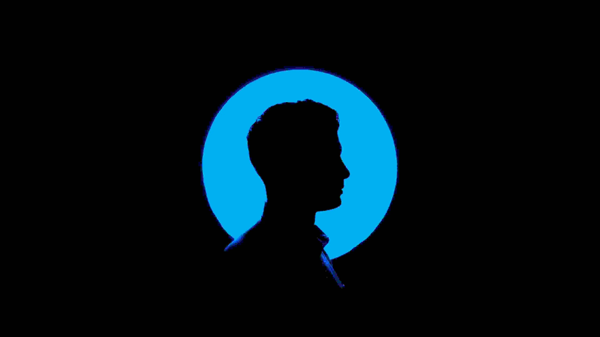

Ervin Sulejmani, ka lindur ne vitin 1996, ne Gjermani dhe jeton ne Breznice, Komunen e Bujanocit
Shkollen fillore e ka perfunduar ne Breznic, ndersa shkollen e mesme e perfundoi ne Rogane
Aktualisht eshte studente i shkencave kompjuterike ne universitetin e Gjilanit
Aktualisht edhe duke ndjekur Bootcampin PERPROGRAMERA
Thanja ime favorite eshte:
Why do we close our eyes when we pray, cry, kiss or dream? Because the most beautiful things in life are not seen but felt by the heart. – Unknown
Adresa ime e banimit:
Breznice, BujanocMe kontaktoni ne: ervin.sulejmani19@gmail.com